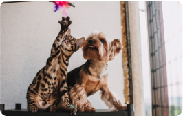

Ajudando você a emcontrar o pet ideal!
Bem-vindo ao nosso site de doação de pets! Nós conectamos ami,ais abandonados a lares amorosos. Navegue pelos perfis dos animais disponiveis e participe de nosso processo de adoção responsavel. adotar um pet tras alegria e salva vidas. junte-se a nós e encontre seu companheiro peludo perfeito!